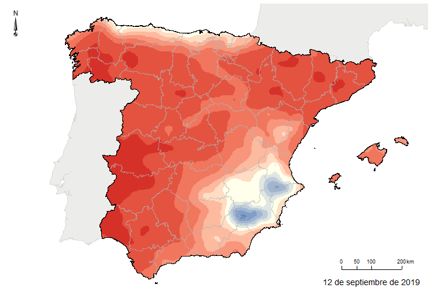

Mapas actuales
Mapas actualizados del contenido de humedad de los combustibles finos muertos para España peninsular, Islas Baleares y las Islas Canarias.
Se advierte que este sitio todavía está en fase de pruebas. Es posible que los mapas de humedad no se encuentren actualizados diariamente.


* Actualmente los mapas muestran la humedad mínima del combustible a partir de datos meteorológicos de las últimas 24 horas actualizados a las 00:00 horas de España peninsular.